Model the Data
How to choose the appropriate model for a connector's data.
Overview
In this part, you work outside Identity Manager to define the model that is going to be used in the next steps to represent a managed system's resources and entitlements inside Identity Manager, as a connector.
This page is no technical procedure, but rather a guide aiming to give a global view on connectors (with their components and their purpose), in order to help integrators choose the most appropriate way to model the managed system in the form of a connector later inside Identity Manager.
The aim is to think about said managed system in order to specify:
- what data you need to import into Identity Manager;
- how you are going to organize this data together, and model it as a connector inside Identity Manager.
Useful data
Modeling the connector is a matter of identifying what data you want to get into Identity Manager. You should not retrieve all the data from the managed system, but only two kinds of useful data:
- data that represents how the authorization system works in the managed system, i.e. data that composes entitlements and their assignments;
- data that you want to watch and/or control and/or fulfill.
The model must take both into account. So both kinds of data must be extracted from the managed system.
Let's take an example. An Active Directory manages authorization through group membership (using the user-group paradigm).
So first we need to retrieve both groups and accounts, in order to manage the AD's assignments of entitlements for our users (in the AD language: manage their accounts and group memberships).
Secondly, we want to control attributes such as the name or e-mail of the account, and ensure they are consistent with the correlated identity. Thus these attributes are the second kind of information that we want to retrieve.
Data models
Fortunately, you won't have to design your connector model from scratch. NETWRIX has done a little work ahead, and you are presented here with four model templates that have proven to work so far. Experience shows that most managed systems can be shaped using one or a mix of the following:
- the User model is the most simple model for a connector, where a user is directly associated with a list of entitlements;
- the User-Group model represents typical Role-Based Access Control mechanisms, where the ability to perform an action is granted through accounts' membership to a specific group (also called role or profile according to the system);
- the Account-Profile-Transaction model represents a system, where the ability to perform an action is granted through the assignment of fine-grained entitlements (called transactions) which are packaged into profiles;
- the Star model represents a system, where the ability to perform an action is granted through the assignment of entitlements which are based on at least two variable parameters.
Each template presents a few objects and the relationships between them. To become the model of the actual managed system, these objects must be renamed and their attributes defined according to the reality of said managed system.
This sheet guides you through choosing the right model template for your connector. The actual technical implementation of the model will be tackled in the last part of the connector configuration: Create an Entity Type.
Connector model and roles:
The design of a model must take into account what is really going on inside the managed system in terms of entitlements, and be flexible enough to express it as roles in the context of the role model. The role model is the universal RBAC/ABAC language used by Identity Manager to express all entitlements.
You don't have to worry about this "role" part right now. It is going to be tackled during single role catalog creation. At this point, you will take a look at the way roles are defined and linked to resources to represent entitlements. But the work starts here, by modeling the resources that exist in the managed system. Some of those resources, such as Active Directory groups, include interesting information about entitlements.
Right now, you can see the connector's model as a precise description of the shape of the technical resources and entitlements of the managed system. And, you can see roles as the higher-order universal language in which entitlements and their assignments are expressed in Identity Manager for all managed systems.
Connector model and provisioning:
After defining the useful data that you need to model a given system, you also have to decide what data you need Identity Manager to write to the managed system. Identity Manager writing to an external system is called provisioning.
Participants and Artifacts
For a given managed system, integrators may need the help of the application owner who knows the purpose of the application.
| Input | Output |
|---|---|
| - | Connector model |
Define the Connector Model
Define your connector model by proceeding as follows:
-
Use the advice and examples given about each model template to find the template that most closely matches your use case.
-
Adapt the template to the reality of your managed system by renaming and adjusting the model's objects.
-
Define your useful data, and thus the attributes of each object according to the reality of the data in your managed system.
-
Ensure that all objects have at least one attribute that can serve as a key to be uniquely identified within Identity Manager. You will get more details about keys during entity type creation.
-
Ensure the following guidelines' enforcement:
Keep it simple
The model must stay as simple as possible. Embed just enough information.
Keep it readable for most users
The model must be easy to understand. For this, adopt a business approach, i.e. make the model user-friendly and close to real activities. This functional approach is essential to the efficiency of data flows (synchronization/provisioning loop). Keep in mind that the aim is to define a model close to the reality of the system.
Keep it open to changes
The model is going to change and evolve during the life of the application, to account for new needs or changes. This must be considered too in the initial model to make future changes less painful.
Find at the bottom a procedure example about modeling the Active Directory.
Model Templates
All templates are detailed with examples and schemas with the following key:
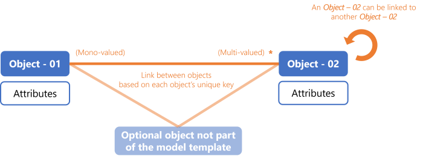
During the technical modeling inside Identity Manager, these objects will become entity types, their attributes will become scalar properties, the links between them will become navigation properties.
User
Authorization mechanisms
The User template is the most simple model for a connector, and used to represent a user directly associated with a list of entitlements.
Users are represented by the accounts they own, and entitlements are represented by resources.
Permissions can be managed:
- by resource, with a list of authorized accounts for each resource;
- by account, with a list of authorized resources for each account.
Model
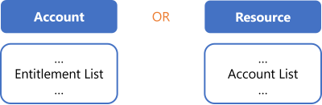
Thus you need to create one entity type to represent either accounts or other resources.
Each entity type needs to be shaped with properties, chosen according to the data useful for entitlement assignment.
The only sensitive and required properties are the keys and the property holding entitlements. It means that:
- if entitlements are managed by resource, then the entity type representing resources must have an attribute (scalar property) containing the list of authorized accounts;
- if entitlements are managed by account, then the entity type representing accounts must have an attribute (scalar property) containing the list of authorized resources.
Recommendation: categorize accounts in types
Some of the managed systems following this model offer predefined types of accounts, with a pre-packaged set of authorizations (such as the basic user with read/write permissions on non-sensitive resources, or the admin with higher privileges).
Account types make modeling easier, as they bring another level of information about the entitlements they contain. So we can embed more useful information in the model, thanks to an attribute that represents the account type.
In further steps, you will be able to define one resource type per account type and map each one to a role for assignment and provisioning.
Example - Canteen badges
Canteen badges are a simple system handled with the User model. Indeed users can simply have among their attributes the access authorization for a given building and a given time. Or also, instead of creating an entity type for users, we can create an entity type for the badges. They would have in their attributes their respective access location and time, and an attribute listing authorized users.
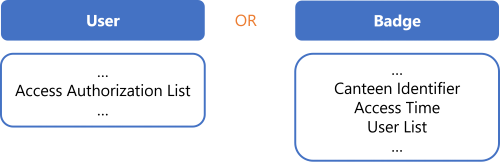
Example - Mailboxes
Mailboxes constitute a complex system, but IGA purposes require little information (only accounts) so this system can too be handled with the User model, either through users and their entitlement lists, or through mailbox entitlements and their lists of authorized users.
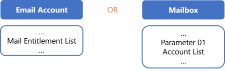
User-Group
Authorization mechanisms
The User-Group template is better suited to represent typical Role-Based Access Control authorization mechanisms, where a user is authorized to perform an action according to their account's membership to a specific group. Instead of groups, some systems talk about roles or profiles: users are authorized to perform an action through a given role or profile which they are assigned, instead of a group membership. It is all the same idea, and the User-Group template is perfect for them too.
Groups can also be categorized and grouped into larger groups.
Users are represented by the accounts they own.
Model
Thus you need to create one entity type to represent groups (or roles or profiles) and one for accounts.
Each entity type needs to be shaped with properties, chosen according to the data useful for entitlement assignment.
The only sensitive and required properties are those constituting the link between both entity types, i.e. the navigation properties representing the group membership.
Recommendation: categorize accounts in types
Many of the managed systems following this model, just like the User model, distinguish between several types of accounts.
In further steps, you will be able to define one resource type per account type and map each one to a role for assignment and provisioning.
Example - SAB
The SAB system handles authorizations using users and groups. A user is authorized to perform an action according to their group membership.
We define two entity types SAB - User and SAB - Group. We fill them with a few attributes useful to manage entitlements in the SAB application. Finally, we add a navigation property in both entity types in order to link User with Group with an "n-to-n" relationship.
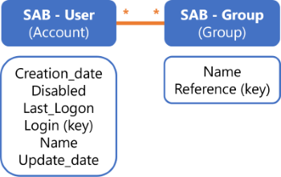
Example - RACF
The RACF connector is used to manage critical entitlements on the mainframe. RACF is a complex system, but IGA purposes only require information about accounts and groups, as entitlements are given by group membership. Thus the system can be simplified to be managed by Identity Manager following the User-Group model.
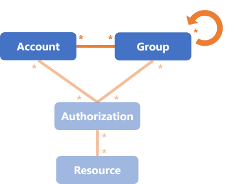
For RACF, Identity Manager provisions only the link between accounts and groups.
Example - TSS
The TSS connector is similar to RACF in its use, but manages fine-grained entitlements at a higher level than RACF. TSS is at least as complex as RACF, and its connector follows a similar simplification as RACF's.
Identity Manager manages users (with their accounts) and groups called here profiles. Both users and profiles are grouped into departments, themselves grouped into partitions. Entitlements are called authorizations, and are linked to users through group (profile) membership.
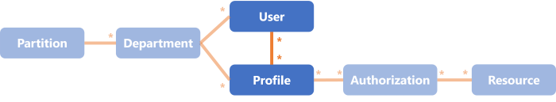
For TSS, Identity Manager provisions only the link between users and profiles.
Identity Manager receives a write access for users and profiles, only a read access for the rest of the model. It is interesting to keep the whole model for query goals such as listing a given user's entitlements.
Recommendation: categorize accounts in types
Many of the managed systems following this model, just like the User model, distinguish between several types of accounts.
In further steps, you will be able to define one resource type per account type and map each one to a role for assignment and provisioning.
Roles: During the
Create Roles in the Role Catalog
step for this connector you can build roles based on the group-membership system represented by users and profiles. Thus you will create navigation rules to represent the link between users and profiles.
Example - SDGE
The SDGE connector is used not to manage people but positions, so the application screens depend on the user's position. In other words, Identity Manager is going to manage users' entitlements in SDGE through their positions.
The object User or Account from the template, which contains users' accounts, is called here Worker.
The object Group from the template is called here Position (grouped into organizations, themselves grouped into organization types). It contains the way an entitlement is given, here through a given position and wallet.
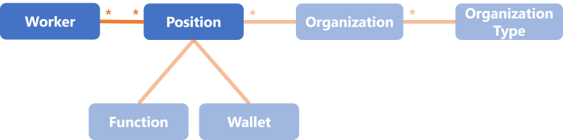
For SDGE, Identity Manager provisions only workers and the link between workers and positions.
Account-Profile-Transaction
Authorization mechanisms
The Account-Profile-Transaction model is better suited to represent a system, with the following basic characteristics:
- To be able to perform an action or read a piece of data, a user must be granted one or several transactions. Transactions represent fine-grained entitlements. They can be associated to a type and conditions that restrict their use, such as a maximum per day or a context of validity.
- Transactions are not assigned directly to an account, but are packaged into profiles, which are then assigned to accounts, which are owned by users.
- Profiles can sometimes be classified into categories representing the sensitivity of the transactions they contain.
For example, profile categories can be
Privilege Profilesfor high privilege transactions on sensitive data, andTechnical Profilesfor technical transactions related to system administration.
Model
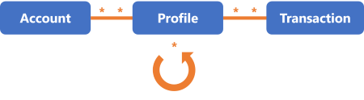
Thus you need to create one entity type to represent accounts, one for profiles, and one for transactions.
Each entity type needs to be shaped with properties, chosen according to the data useful for entitlement assignment.
The only sensitive and required properties are those constituting the link between entity types, i.e. the navigation properties representing the packaging of transactions into profiles on the one hand, and the assignment of profiles to accounts on the other hand. You can potentially add a navigation property in the Profile entity type in order to categorize profiles within larger profiles.
Instead of creating as many Profile objects as there are categories of profile, NETWRIX recommends shaping the Profile object with a category attribute. Indeed, a multiple-object model complexifies the addition of new profiles in the future. And as new profiles can be created in the future though, then you must plan for it.
For example, instead of modeling two artificial types of profiles called PP for "Privilege Profile" and TP for "Technical Profile", prefer a single object P that represents all profiles using a specific attribute to differenciate technical from privilege profiles. This way, the model sticks to the real capacity of the technical tool and all use-cases are considered.
See the schema below this note.
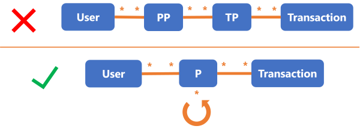
Transactions are not mandatory in a model. Most of the time, the profile packages are predefined once and for all, or are the responsibility of the application owner. Then Identity Manager doesn't need to manage the specific transactions for a profile directly inside the managed system. You can hence avoid modeling transactions altogether. In this case, you fall back on the User-Group model with a twist: if profile categories are relevant in the system's authorization mechanism, then you must take them into account.
Example - TSS
The TSS connector is actually a mix of the User-Group and Account-Profile-Transaction models. The User-Group part is explained above.
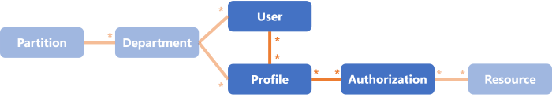
Transactions are called here authorizations.
For TSS, Identity Manager provisions only the link between users and profiles. Transactions (and the rest of the model) are only readable.
Star
Authorization mechanisms
The Star model is better suited to represent a system, where the ability to perform an action is granted through the assignment of entitlements, based on several variable parameters, most often the combination of a profile and at least one user data criteria.
For example, you might want to give certain entitlements only to users who have an administrator profile and work in Marseilles.
As the parameter combination is not predetermined, the whole system can become highly complex with the addition of data criteria.
Users are represented by the accounts they own.
Comparison with other models: while the User-Group model grants an entitlement via a group membership, the Star model grants said entitlement via a special authorization linking the right criteria altogether (i.e. the right profile and other user parameters).
Model
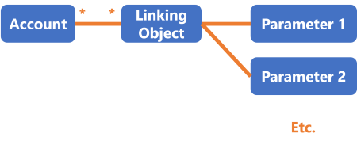
Thus you need to create one entity type to represent accounts, one for each criterion, and another one to represent the object linking acounts to criteria.
Each entity type needs to be shaped with properties, chosen according to the data useful for entitlement assignment.
The difficulty of this model is to map everything to roles in the role model. In Identity Manager's role model, one assignment is always one role. But in this case, in the managed system, an assignment is a tuple of things.
To map the tuple of things on a role, we have several choices:
- Create a role per possible combination of tuple of things. This can quickly get out of hand as far as the number of created roles is concerned.
- Use parametrized roles. The number of roles will be contained, but it is a little more complicated to configure.
The flexibility generated by parameters is particularly interesting for roles that incorporate entitlements in a more complex way than application roles. If the information contained in a role is complicated to deduce, then parameters can bring some clarity in the configuration. The objective is always to minimize the number of distinct roles, and the number of roles that are assigned to one given identity.
Example
Consider an application which manages entitlement assignment with different rules, according to users' profiles, attachment areas and sites. Our example shows 4 profiles, 4 attachment areas and 3 sites. So a user may be assigned a given entitlement for a given profile, attachment area and site.
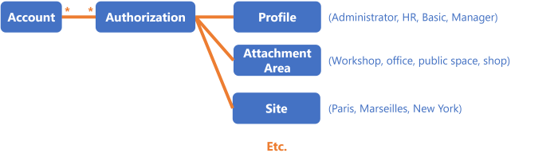
For this connector, Identity Manager provisions only the links between accounts and linking objects, and the links between linking objects and each criterion.
Concerning roles, integrators have two options:
- either create a specific role for
Profile_iwithAttachmentArea_jandSite_kfor all available profiles, attachment areas and sites, which makes a total of 48 roles (for a quite simple example); - or create a single role with parameters for profiles, attachment areas and sites.
Procedure Example
Step 1: choose the connector model.
Let's say we are modeling an Active Directory, which handles authorization through the group memberships of accounts. In other words, to assign an entitlement to an identity, we make the AD account of said identity member of the corresponding AD group. That is exactly what the User-Group template is designed to handle. See the Model the Data topic for additional information.
Step 2: adapt the model to your reality.
We start by renaming the Account object as AD_User and the Group object as AD_Group.
Step 3: define useful data close to your reality.
We shape these objects with the following attributes:
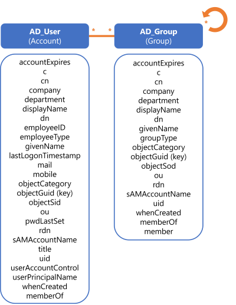
Step 4: ensure that all objects have unique keys.
Indeed we defined objectGuid as a key for both accounts and groups.
Step 5: ensure the guidelines' enforcement.
We could content ourselves with this model. The main benefit of this model is to closely mimic the reality of the AD authorization mechanism. But we'd like to go a bit further, applying a "keep it open to changes" approach.
Observe the similarities between AD_User and AD_Group. There are many attributes repeating between the two entity types.
We can simplify: prefer a single object AD_Entry that can represent both users and groups. The difference between the two types of object will be made clear via specific properties like objectCategory, member and memberOf.
Beyond avoiding repetition, this makes the model easily adaptable if new elements pop up.
For example, we could want to include computers or organizational units in the model in the future. Instead of creating two new additional objects
AD_ComputerandAD_OU, the existing objectAD_Entrycan represent them both at no additional modeling cost. Even though we could addAD_ComputerandAD_OUwithout merging groups with entries, designingAD_Entrywith all these attributes provides the means to add objects without creating new entity types.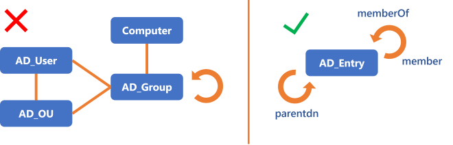